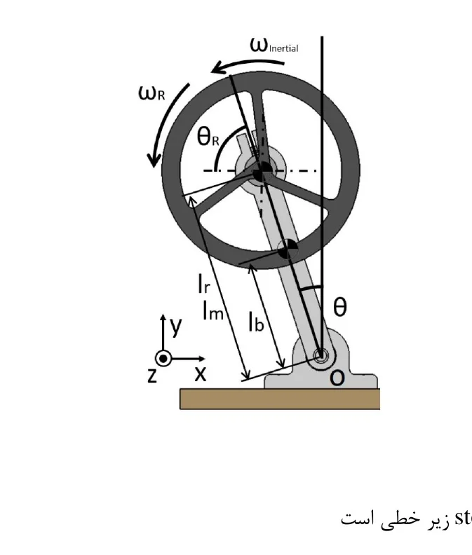
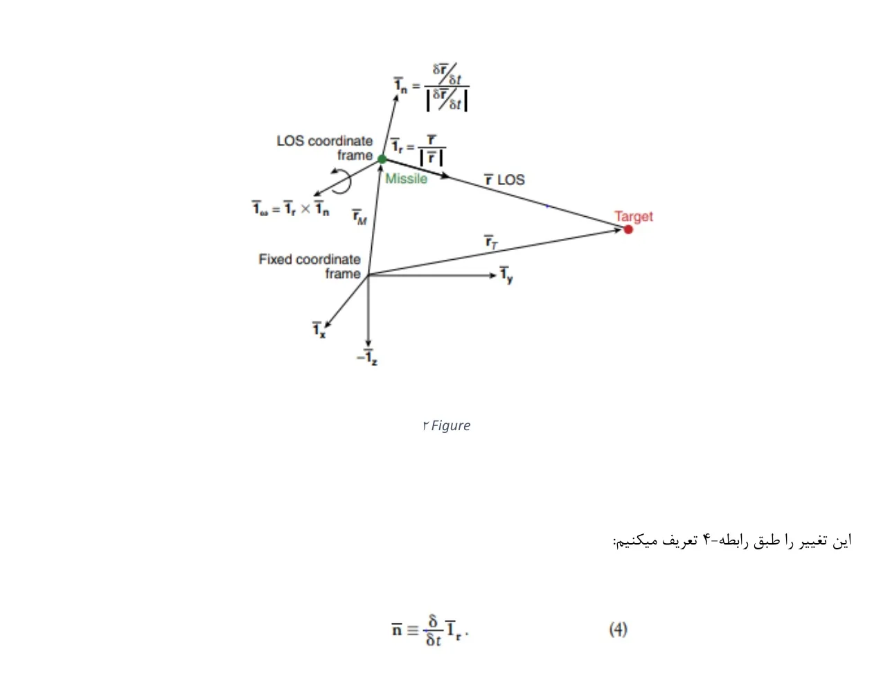
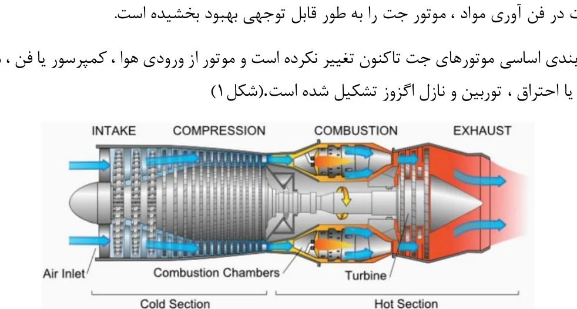
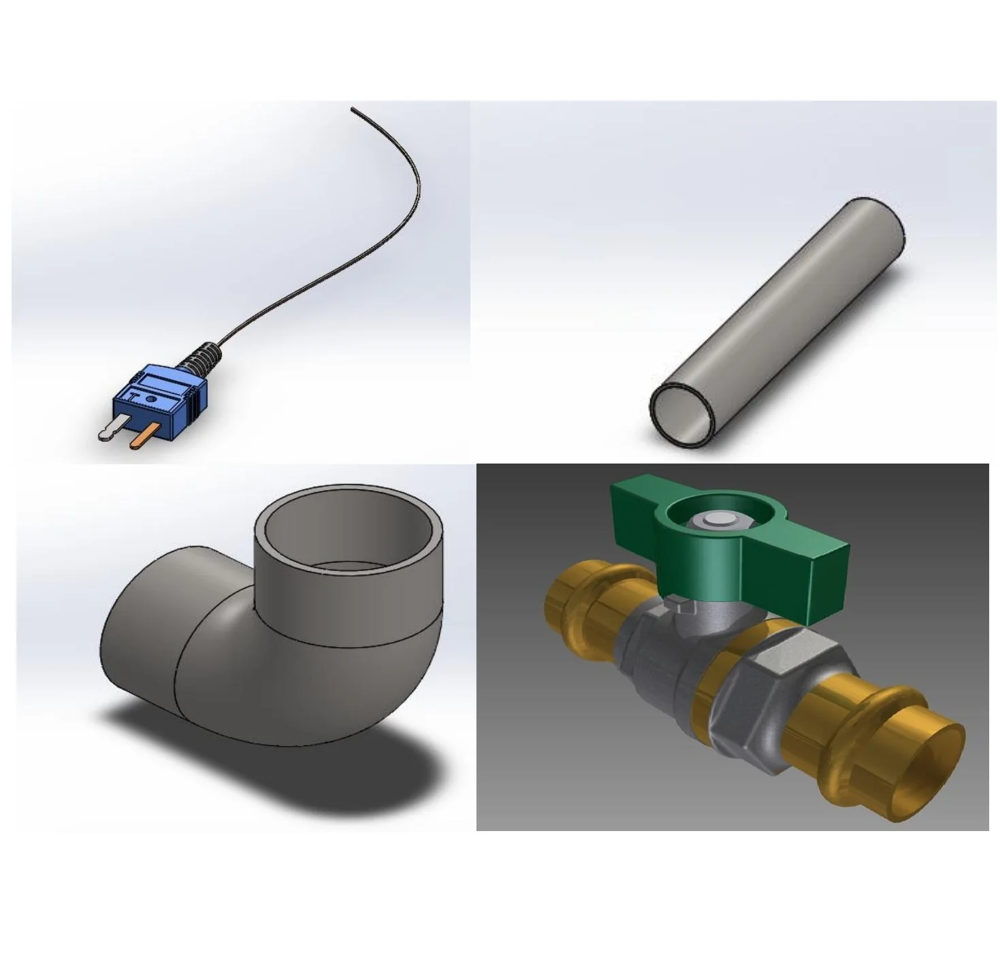
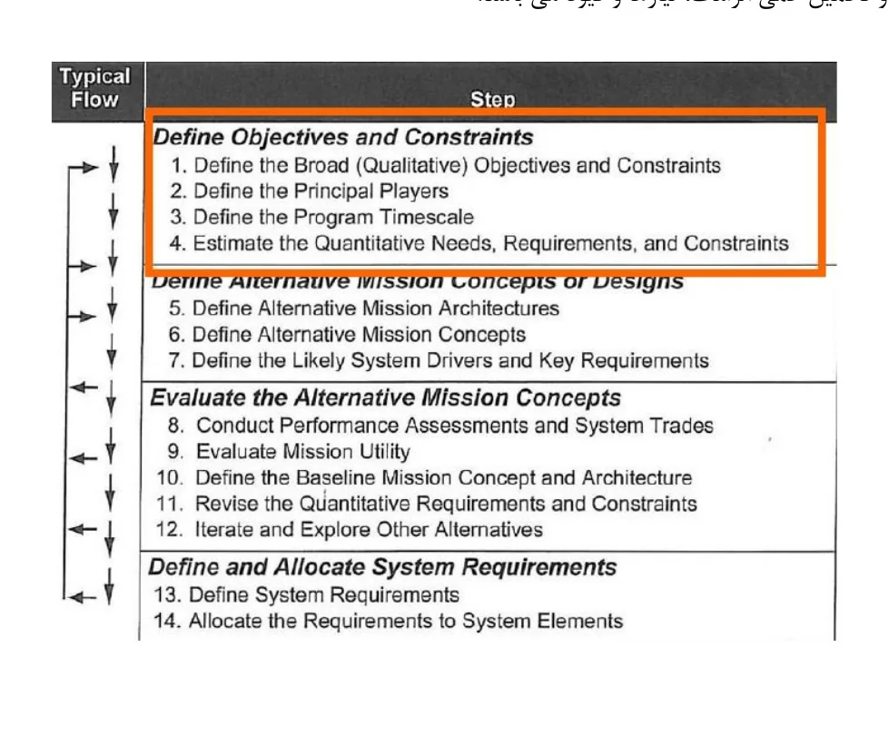

Undergraduate aerospace engineering · 2020–2023
Selected Undergraduate
Engineering Projects
A compact archive of course projects in dynamics and control, missile guidance, propulsion materials, thermal-system design, and complex space-project planning.
Purpose
These shorter studies document the technical foundation developed during my B.Sc. in Aerospace Engineering. Rather than presenting them as full research case studies, this page highlights the engineering question, modelling approach, principal tools, and most relevant outcome from each project.
Automatic control · Individual project
Reaction-Wheel Stabilized Inverted Pendulum
I modelled a reaction-wheel balanced inverted pendulum as an analogue for spacecraft attitude control. The nonlinear mechanical and motor equations were linearized around the upright equilibrium, represented in state-space form, and evaluated through closed-loop MATLAB simulations.
Engineering outcome. The study connected reaction-wheel torque, motor electrical dynamics, and pendulum motion in a single control model and evaluated controller response around the unstable equilibrium.

Computer-aided design · Team project
Proportional-Navigation Missile Interceptor Simulation
This project developed the conceptual and computational basis for a proportional-navigation interceptor. The work covered handover uncertainty, line-of-sight coordinate systems, engagement kinematics, PN guidance-law development, seeker and radome considerations, command preservation, and simulation architecture.
Engineering outcome. A system-level simulation framework was assembled to connect target–interceptor geometry, line-of-sight rate, acceleration commands, and missile response for terminal guidance analysis.

Materials and manufacturing · Individual project
Material Selection for Turbofan Engines
I investigated the non-composite alloys used across major turbofan sections, including the fan, compressor, combustor, turbine, and shafts. The study connected local temperature, pressure, stress, oxidation, fatigue, density, and manufacturability requirements to candidate materials.
Engineering outcome. The project produced a component-by-component material map and compared thermal, mechanical, corrosion, cost, and manufacturing properties for representative aerospace alloys.

Heat transfer · Large team design-and-build project
Thermal-System Design and Manufacturing
The team designed and assembled the mechanical elements of a heat-transfer experiment. Components were modelled individually in SolidWorks and CATIA, integrated into an assembly, and prepared for fabrication and experimental use.
Engineering outcome. The project translated a thermal-test concept into manufacturable parts, including sensing hardware, tubing, fittings, and flow-control components.

Selected topics in flight dynamics and control · Team project
Management of Complex Space Projects
This systems-engineering study examined how complex space projects progress from mission definition to architecture selection, performance trades, requirements allocation, risk management, scheduling, stakeholder coordination, and project control. My assigned work included defining complex space projects, the V-model, mission elements, timelines, and risk and success assessment.
Engineering outcome. The report organized the early mission-design process into a traceable framework linking qualitative objectives, principal stakeholders, quantitative requirements, alternative architectures, and system-level trades.

Technical foundation
From coursework to research engineering
Across these projects, I developed the analytical habits that later supported my work in experimental mechanics, scientific instrumentation, cryogenic systems, and asteroid-dynamics optimization: formulate the system, identify assumptions, build a model, evaluate performance, and communicate the engineering result.